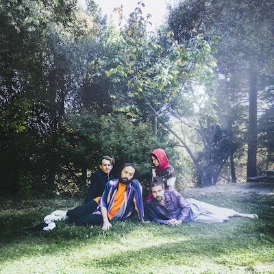

“I'll pour the water if you bring the tree / Nothing looks that real to me / I only see two or three colors.”
This song first came to my attention in the summer of 2016. These first few lines, for whatever reason, stuck with me through what would become in retrospect, a valley within the timeline of my college experience. The album Masterpiece was close, personal, and a little rough around the edges. It felt like it was learning, still getting comfortable with itself, but knew what it wanted and did whatever was needed to achieve that.
Capacity came around and never grabbed much of my attention. Just over a year after the release of their debut it was polished, and became clear the band had found their footing. It wanted more. It was confident but not content.
On their third full length all of these previous shortcomings were addressed, and used to their advantage in fully establishing the band as a powerhouse in indie rock.
This time around the group opted for a much needed two year stretch of time between albums. Something I've always been fascinated with concerning album cycles, and the amount of time in between, is both the growth of an artist as well as the fan, and how these two aspects of creation and consumption play off of one another. Throughout the college experience I've been able to draw a number of parallels between my own personal growth and that of the band. It felt eerily fitting that just a few short weeks before my graduation, U.F.O.F., would be released and resonate as strongly with me as it has.
Adrianne Lenker succeeds in maintaining a certain level of self-awareness when dealing with sensitive topics, while also demanding attention through a mastery of vocal control and volume manipulation. I find myself holding back breath only to be rewarded briefly by moments like a vocal break on “From” or the soothing chorus on “Orange.”
The album exists as a lens for the listener to step back and view the world from. It doesn't explain anything or tell you what to do, but rather presents an opportunity to evaluate. Much like the pressing demand from others to vocalize your desires, the album offers no clear path, providing more questions than answers. I'm more excited than ever about my future, yet I have trouble seeing more than a week ahead of today.
“Still as the moment we're lying in right now.”